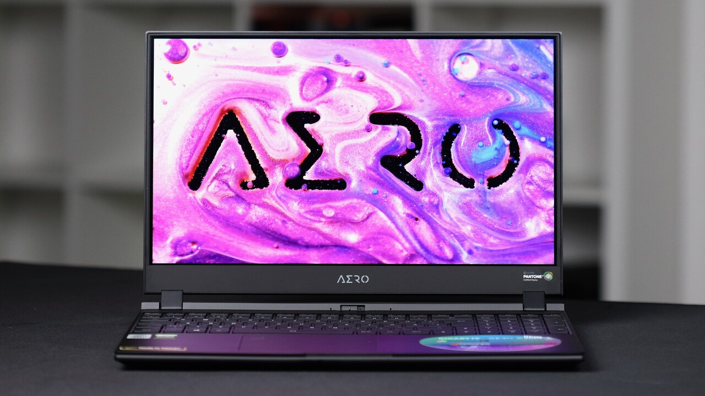

DigiNews
DigiNews
تمامی حقوق این سایت برای دیجی نیوز محفوظ است. نقل مطالب با ذکر منبع بلامانع است.
copy Right© 2022 DigiNews News Agancy, All rights reserved

بررسی لپتاپ گیگابایت AERO 15 OLED؛ نهایت قدرت برای حرفهایها
انتخاب بهترین لپتاپ بازار که هم برای کار حرفهای و هم برای گیمینگ مناسب باشد، کار سختی نیست. در واقع شما بهترین لپتاپ را با این ویژگیها نیاز دارید: سختافزار قدرتمند، نمایشگر باکیفیت، طراحی زیبا، ...
انتخاب بهترین لپتاپ بازار که هم برای کار حرفهای و هم برای گیمینگ مناسب باشد، کار سختی نیست. در واقع شما بهترین لپتاپ را با این ویژگیها نیاز دارید: سختافزار قدرتمند، نمایشگر باکیفیت، طراحی زیبا، وزن کم، باتری پرظرفیت، درگاههای متنوع و مواردی از این قبیل. اگر لپتاپی تمام این موارد را با هم داشته باشد، بیشک به لپتاپی ایدهآل تبدیل خواهد شد. گیگابایت Aero 15 OLED یکی از همین لپتاپهای ایدهآل است. این لپتاپ در بدنهای زیبا و ظریف و نسبتاً سبک، قویترین سختافزار حال حاضر دنیای لپتاپ را در خود جا داده و نمایشگر امولد آن با رزولوشن 4K چشمهای شما را به خود خیره میکند. البته لپتاپ گیمینگ ایدهآل، قیمت بالایی هم دارد. در این مطلب میخواهیم این لپتاپ را بررسی کنیم.
شرکت تایوانی گیگابایت در بازار کامپیوترهای شخصی سبد محصولات کاملی دارد؛ از قطعات اصلی مثل مادربورد و کارت گرافیک و رم و پاور و حافظه SSD گرفته تا لوازم جانبی مثل کیبورد، ماوس، اسپیکر، هدست و مانیتور. البته این شرکت در بازار ایران بیشتر با قطعات اصلی مثل مادربورد و کارت گرافیک شناخته میشود. محصولات این شرکت کیفیت و تنوع بسیار بالایی دارند و همیشه یکی از گزینههای اصلی خریداران بودهاند. با این حال لپتاپهای گیگابایت هنوز به اندازه کافی در ایران شناخته نشدهاند. لپتاپهای این شرکت دو سری آئورس (Aorus) و آئرو (Aero) دو دسته کاربر را هدف گرفتهاند: سری اول برای گیمرها و سری دوم برای کاربران حرفهای و تولیدکنندگان محتوا. طبیعیست که هرکدام از محصولات این دو سری را میتوان برای هر دو دسته کاربر پیشنهاد کرد، چون ترکیب سختافزاری قدرتمند هم نرمافزارهای حرفهای را اجرا میکند و هم بازیهای سنگین روز را. در ادامه مشخصات لپتاپ گیگابایت Aero 15 OLED را مرور میکنیم.
مدل پیشرفتهتر این لپتاپ یعنی YD از پردازنده نسل یازدهم اینتل Core i9 و کارت گرافیک انویدیا جیفورس RTX 3080 بهره میبرد و بسیار قدرتمندتر است. با این حال مجموعه سختافزار این لپتاپ، ترکیبی رؤیای برای حرفهایترین کاربران محسوب میشود. قیمت این دستگاه در بازار ایران هنوز مشخص نیست اما با توجه به قیمت محصولات مشابه میتوان برچسب قیمتی حدود ۷۰ میلیون تومانی را برای آن پیشبینی کرد.
طراحی
بدنه لپتاپ گیگابایت Aero 15 OLED XD تفاوتی با نسل قبل یعنی Aero 15 OLED XC ندارد و تنها ظاهر قاب پشت نمایشگر تغییر کرده و لبه بالایی نمایشگر کمی فرو رفتگی بیشتری دارد تا باز کردن آن راحتتر از قبل باشد. البته طراحی مشابه قبل نقطه ضعف محسوب نمیشود چون همچنان به روز و در عین حال با کیفیت است.
ظاهر بدنه لپتاپ جذاب و زیبا است. شاسی از آلومینیوم با کیفیتی ساخته شده و قاب پشت نمایشگر هم جنس آلومینیومی دارد. گیگابایت لولاهای نمایشگر را به گونهای طراحی کرده که به راحتی و با یک دست هم میتوانید نمایشگر باز کنید. فاصلهای که با باز شدن لپتاپ، بین نمایشگر و بدنه ایجاد میشود، بالاتر بودن نمایشگر نسبت به برخی از رقبا را به همراه دارد و به همین دلیل دید راحتتری را برایتان رقم میزند. گیگابایت همچنین ضخامت لبههای نمایشگر را افزایش داده تا نمایشگر در عمق بیشتری قرار بگیرد و مقاومت بالاتری در برابر ضربات داشته باشد. فریم اطراف نمایشگر نیز همان اندازهای است که از یک لپتاپ مدرن انتظار میرود و در ۳ طرف تنها ۳ میلیمتر است.
وبکم اما جایگاه چندان مناسبی ندارد و در بالای کیبورد و روی بدنه اصلی لپتاپ تعبیه شده است. به همین دلیل در عمل نمای مناسبی را در اختیارتان نمیگذارد و تقریباً در بیشتر شرایط، سوراخهای بینی را به مخاطب نشان میدهد. وبکم همچنین به یک کلید فیزیکی مجهز شده که به کمک آن به سادگی میتوانید آن را مسدود کنید تا نگران نقض حریم خصوصی خود نباشید. شاید از تنها نکات منفی کیفیت لپتاپ، همین کلید مخفی کننده وبکم باشد که کیفیت پایینی دارد و کمی لق میزند؛ البته این موضوع تاثیر منفی چندانی در کیفیت لپتاپ نمیگذارد.
با نگاهی به پورتها متوجه میشوید که با مجموعهای به روز و کامل طرف هستید که به راحتی از پس نیازهای تولید کنندگان محتوا بر میآید. در سمت چپ، پورتهای HDMI 2.1، مینی دیسپلی پورت ۱.۴، یک پورت USB-A 3.2، جک ۳.۵ میلیمتری هدفون/میکروفن و پورت لن ۲.۵ گیگابیتی به چشم میخورد. در سمت راست هم دو پورت USB-A 3.2، یک پورت USB-C با پشتیبانی از پاور دلیوری و تاندربولت ۴ و خروجی دیسپلی پورت و در نهایت پورتهای کارتخوان اسدی و جک آداپتور تعبیه شدهاند. پورتها با وجود این که کامل هستند اما ترکیب آنها در مقایسه با قبل تفاوتی نداشته و تنها شاهد اضافه شدن پشتیبانی از تاندربولت ۴ (به جای ۳ در نسخه قبلی) هستیم. گیگابایت لبه پشتی را تنها به خروجیهای دو فن لپتاپ اختصاص داده و از این بخش هیچ بهرهای برای تعبیه پورتها نبرده است. به همین دلیل پورتها به ویژه روی لبه سمت راست، به هم نزدیک هستند اگر بخواهید از تمام آنها بهطور همزمان استفاده کنید، میز شلختهای خواهید داشت.
DigiNews
DigiNews
تمامی حقوق این سایت برای دیجی نیوز محفوظ است. نقل مطالب با ذکر منبع بلامانع است.
copy Right© 2022 DigiNews News Agancy, All rights reserved